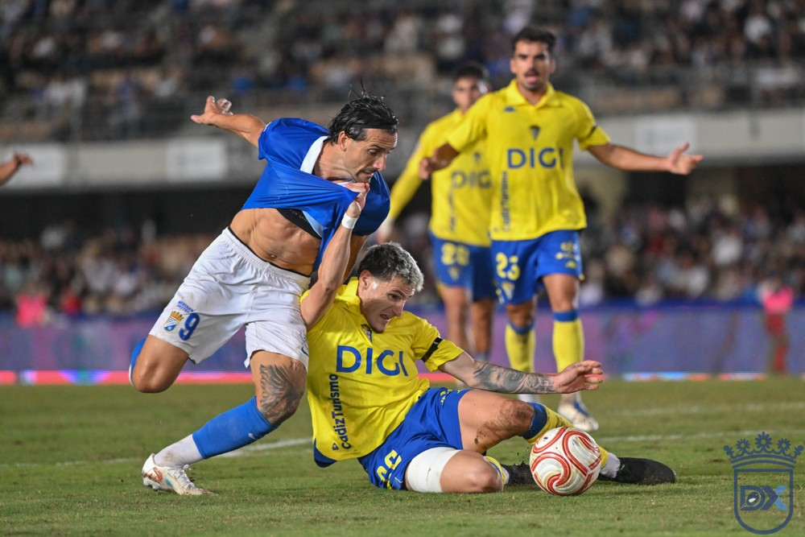

La razón pudo más que el corazón

Foto: Diario XerecistaEl Xerez CD se despidió de la Copa del Rey al caer 1-3 ante el Cádiz CF en Chapín. Jaime López adelantó a los azulinos en el primer minuto y el equipo de Abel Segovia aguantó el pulso hasta el descanso (1-1). En la segunda parte, la pegada del conjunto gaditano, dos categorías por encima, decidió el derbi con los goles de García Pascual y Borja Vázquez.
La eliminación no empañó una noche que la afición xerecista tardará en olvidar. Chapín registró una entrada que recordó los años del club en Primera y Segunda División, con casi 2.500 seguidores cadistas en el Fondo Norte. La grada empujó a su equipo hasta el final. Antes del inicio se guardó un minuto de silencio en memoria de los fallecidos en el accidente de tren de Toledo.
Un once con muchas novedades
Segovia rotó, como había anunciado. En la portería jugó Marcos Alconchel, en lugar de Pantoja, titular en todos los partidos de liga hasta ahora. En defensa, Víctor López jugó de lateral derecho por Guille Campos. Moi y Fali, ambos con pasado en el Cádiz, formaron la pareja de centrales, y otro excadista, Chacartegui, ocupó el lateral izquierdo.
En el centro del campo, Raúl López, también con pasado cadista, acompañó a Isma, autor del gol de la victoria ante el Marbella el domingo. Óscar Lorenzo volvió al once por la derecha y Zequi partió por la izquierda. Jaime López jugó de mediapunta y Rubén Mesa, de delantero centro.
Borja Jiménez, que esta semana se estrenó en el banquillo cadista tras la salida de Albert Celades, también hizo cambios. Alineó a David Gil, Juan Díaz, Noah, Manu, Cristian, Damián, Doue, Moueffek, Borja Vázquez, Efe Jr. e Izeta.
Gol de Jaime López en el primer minuto
El partido empezó a toda velocidad. Borja Vázquez pidió penalti al caer en el área local, y en la jugada siguiente golpeó el Xerez. Rubén Mesa recibió dentro del área y cedió de tacón a Jaime López, que batió a David Gil. 1-0 en el minuto 1.
El gol dio alas al Xerez, que presionó arriba y dominó ante un Cádiz impreciso. En el minuto 9, David Gil evitó el segundo con una gran parada a un remate de Chacartegui. Con el 1-0 en el marcador, el Xerez también reclamó un posible penalti por un agarrón de Cristian a Rubén Mesa dentro del área del Cádiz.
Pasado el cuarto de hora, reaccionó el Cádiz. Borja Vázquez volvió a reclamar penalti, esta vez por una acción de Chacartegui (18'). Después, Alconchel respondió con reflejos en un mano a mano ante Izeta.
Isma perdona y Cristian empata
En el minuto 21, Isma rozó el 2-0: recibió un buen pase de Zequi y su disparo se marchó fuera por muy poco. Tres minutos después, el Cádiz no perdonó. Cristian sacó un zurdazo desde más de veinte metros que sorprendió a Alconchel. 1-1 en el minuto 24.
Tras el empate, el Cádiz dio un paso adelante, aunque sin llegar a dominar. El ritmo bajó en el tramo final de la primera parte, y el Xerez se marchó al descanso con el partido igualado y tras una primera media hora de gran nivel.
García Pascual, nada más entrar
Segovia movió el banquillo en el descanso: Julito entró por Zequi y se colocó en la banda. Borja Jiménez dio entrada a Zárate y Arribas en lugar de Moueffek y Manu. Julito avisó pronto, con un disparo flojo tras aprovechar un desajuste de la defensa amarilla (48').
En el minuto 58, el Cádiz cambió a Doue e Izeta por Ibon y García Pascual. El delantero tardó menos de un minuto en marcar: aprovechó un pase largo de Noah, tras uno de los pocos errores defensivos del Xerez, y puso el 1-2 en el minuto 59. Tras el gol, el árbitro detuvo el partido por el lanzamiento de objetos desde la curva del Fondo Sur.
Con el marcador en contra, Segovia buscó soluciones. Mario Peregrina sustituyó a Jaime López (60'). En el minuto 70 entraron Josete, Isuskiza y Chuma por Fali, Isma y Rubén Mesa.
Borja Vázquez sentencia
Óscar Lorenzo lo intentó, y Julito, al contragolpe. Dos córneres seguidos encendieron a la grada, pero el empate no llegó. El que marcó fue el Cádiz: el jerezano Borja Vázquez, uno de los mejores de su equipo, se deshizo de Chacartegui y cruzó un zurdazo junto al palo. 1-3 en el minuto 83.
En el tramo final, las mejores ocasiones fueron del Cádiz, y Alconchel volvió a lucirse en un mano a mano ante Efe Jr. La última del Xerez fue una falta de Óscar Lorenzo.
El Xerez lo intentó hasta el final, pero el Cádiz, más entero tras los goles, manejó el partido con oficio y se llevó una victoria que le da un respiro anímico. Para el equipo de Segovia toca pasar página: el domingo visita al Tamaraceite en liga.
Ficha técnica
Xerez CD: Marcos Alconchel, Víctor López, Moi, Fali (Josete, 70'), Chacartegui, Raúl López, Isma (Isuskiza, 70'), Jaime López (Mario Peregrina, 60'), Óscar Lorenzo, Zequi (Julito, 46') y Rubén Mesa (Chuma, 70').
Cádiz CF: David Gil, Juan Díaz, Noah, Manu (Arribas, 46'), Cristian (Kovacevic, 66'), Damián, Doue (Ibon, 58'), Moueffek (Zárate, 46'), Borja Vázquez, Efe Jr. e Izeta (García Pascual, 58').
Goles: 1-0 (1') Jaime López. 1-1 (24') Cristian. 1-2 (59') García Pascual. 1-3 (83') Borja Vázquez.
Árbitro: José Antonio Sánchez Villalobos (C. Almería). Amonestó a Jaime López y Chacartegui, del Xerez CD, y a Ibon, Damián y Borja Vázquez, del Cádiz CF.
Incidencias: primera eliminatoria de la Copa del Rey, disputada en Chapín con una gran entrada y casi 2.500 seguidores cadistas en el Fondo Norte. Minuto de silencio en memoria de los fallecidos en el accidente de tren de Toledo.
🇬🇧 Read in English ← Volver a la portada